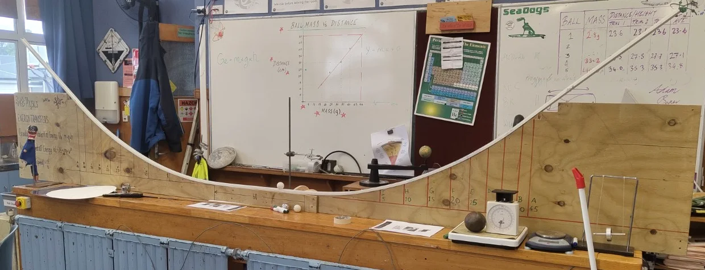

PROFESSIONAL STANDARDS: REFLECTION AND EVIDENCE
Evidence review: 25 October 2026. This record maps existing evidence across all six standards in the portfolio’s framework. The checklist’s ProfEx 1 Template Requirements tab specifically lists reflections for Standards 2, 3 and 6. These are retained; Standards 1, 4 and 5 provide supplementary mapping, not additional confirmed assessment requirements. The original university template has not been located for independent verification. This is a progress record, not a claim that any standard has been fully met. Planned actions, limitations and gaps are identified explicitly. Retain learner anonymity and use the links to view the original evidence.
STANDARD 1 – TE TIRITI O WAITANGI PARTNERSHIP
Focus
Develop my understanding of tangata whenuatanga and Te Tiriti o Waitangi partnership, and connect this learning with my teaching in Aotearoa New Zealand.
Reflection
My experience of teaching elsewhere does not automatically prepare me to understand learners and communities here. I have prepared and delivered my pepeha as a classroom introduction, and I am continuing to learn the school karakia. These are starting points for learning and participation, not evidence that I have fulfilled the whole standard.
My general observations record te reo Māori displays in the staffroom, the school’s use of karakia and “Whakamau”, and the Te Ūrunga Tapu o Tainui mural and its explanation. These have prompted me to consider the connections between language, local history and place. The photographs show the school environment and my observations of it. They do not demonstrate my own teaching of local histories, partnership with mana whenua or an effect on Māori learners’ achievement.
Next steps
Discuss the meaning and appropriate classroom use of the school’s karakia and whakataukī with knowledgeable staff. Ask my mentor teacher how I can learn about local Māori perspectives and aspirations through appropriate school relationships. Record one specific change to my teaching arising from that learning, then collect learner responses rather than assuming that including te reo Māori establishes culturally responsive practice.
Evidence links
Teacher statement and pepeha: records my developing commitments and the pepeha text. A statement of intention is not evidence that every commitment has been enacted.
Week 4 reflection, 19–23 October 2026: records the classroom introduction and students’ questions. This supports evidence of participation and relationship building, not a claim of improved Māori learner outcomes.
General observations: records school culture, ongoing karakia learning and the mural note added 25 October 2026. The mural observation date was not recorded; its interpretation is attributed to the accompanying display.
Evidence gap
Direct evidence of how I enact Te Tiriti commitments in curriculum decisions and support Māori learners to succeed as Māori remains limited. Relevant consultation, teaching examples and learner perspectives should be added when they occur.
STANDARD 2: PROFESSIONAL LEARNING
Focus
Commit to ongoing professional growth, using evidence, reflection and feedback to improve teaching practice and student outcomes.
Reflection
My planning has changed as I have learnt more about the students. The introductory lessons showed that charge basics needed more attention before circuits. More recently, contrasting lesson timings showed me that completing a plan is not the same as responding well to the class. On 21 October, questions and the assessment reduced practical time; on 23 October, the practical finished about ten minutes early.
My mentor teacher’s formal observation on 21 October identified clear goals, subject expertise and support for groups, and recommended additional circuit challenges. His informal feedback on 22 October suggested following some invitations for questions with a question that checks understanding. I have reflected on this and prepared a separate fault-finding extension. The revised resource shows a response to feedback; it does not yet demonstrate that the change improved learning.
Next steps: use targeted questions after explanations, retain a short individual check, and record what the responses reveal. Use the extension when appropriate and evaluate its effect after delivery.
Evidence links
Formal mentor observation, 21 October 2026: independent feedback on my teaching and an agreed next step of additional circuit challenges.
Revised Lesson 4 extension plan, prepared after the 23 October lesson: includes a fault-finding task for early finishers. This is planning evidence, not evidence of a subsequent delivery.
STANDARD 3 – PROFESSIONAL RELATIONSHIPS
Focus
Build respectful, collaborative and positive relationships with learners, colleagues, families and the wider community to support learning and wellbeing.
Reflection
Sharing my pepeha gave students an opportunity to learn about me and ask questions. In the observed lesson on 21 October, they asked me to present it in Hindi, which I did. On 23 October, I used spare time for conversations that helped me get to know students. These were opportunities for relationship building, rather than proof that every student felt included or that achievement improved.
My mentor teacher’s observation provides evidence beyond my own impression: he recorded that I moved between groups, explained ideas and asked questions to promote curiosity and support different depths of learning. My conversations with him also inform my planning. Observing restorative practice and outdoor activities has helped me consider how expectations, support and relationships work together, but observing another teacher is not evidence that I have independently demonstrated the same practice. Direct evidence of my own work with whānau is not yet established in these records.
Next steps: continue individual conversations and seek brief learner feedback on the support they find useful. Record a specific example of adapting my teaching in response. Discuss appropriate opportunities for whānau engagement with my mentor teacher without claiming interactions that have not occurred.
Evidence links
Formal mentor observation, 21 October 2026: records movement between groups, explanations, questioning and support for differentiated outcomes.
Week 4 reflection, 19–23 October 2026: records the pepeha, students’ questions, individual conversations and learning from supportive outdoor settings. This is my reflective account, not a learner survey.
General observations, September–October 2026: records professional dialogue, restorative practice and school culture. These provide context for my professional learning; descriptions of others’ practice are not claimed as my own teaching.
STANDARD 4 – LEARNING-FOCUSED CULTURE
Focus
Develop a respectful, inclusive learning environment in which students can participate, ask questions and take responsibility for learning.
Reflection
In the circuit lesson observed on 21 October, my mentor teacher recorded that I moved between groups, explained ideas and asked questions to support learning. My Week 4 reflection also records students asking questions during my introduction and working independently during the current-measurement investigation on 23 October. These provide examples of participation and opportunities for relationship building, but they do not establish that every student felt safe, included or confident to contribute.
The Lesson 4 plan assigns practical roles and includes safe use of low-voltage circuits and meters. This shows how I intended to organise participation and practical safety. My observations of gender-based grouping are more tentative: I have noticed a pattern, with exceptions, but do not know its cause or whether it affects belonging. I should investigate participation without assuming that students’ preferred groups are necessarily a problem.
Next steps
During group work, check who handles equipment, records findings and contributes explanations. Adjust roles or support where participation is uneven. Seek brief learner feedback about what helps them participate and ask questions, and record how I respond. Keep high expectations alongside practical support.
Evidence links
Formal mentor observation, 21 October 2026: provides an external account of group support, questioning, clear objectives and engagement.
Lesson 4 plan: records practical roles and safety expectations. Read alongside the Week 4 reflection for the account of delivery and independent work.
Evidence gap
A systematic account of individual participation and direct learner feedback on inclusion has not yet been established. Observations of another teacher’s classroom culture are professional learning evidence, not proof of my own practice.
STANDARD 5 – DESIGN FOR LEARNING
Focus
Connect curriculum knowledge, assessment information and knowledge of learners to coherent planning and appropriate learning activities.
Reflection
I have prepared a 12-lesson electricity unit with a sequence of concepts, practical tasks and assessment opportunities. The introductory teaching showed that charge basics needed more attention before circuits. I therefore revised the sequence with my mentor teacher rather than assume that the original plan matched students’ starting points.
The unit overview documents intended learning. It is not a record of everything delivered: its 13 October version still includes planned dates and activities that were subsequently changed. The learning register and later lesson reflections should be used to establish what actually happened. My Week 4 reflection identifies different pacing needs across lessons and the limited individual evidence from an oral exit check. The separate fault-finding plan responds to the need for meaningful extension, but its effect has not yet been evaluated.
The ramp and ball-track photographs document resources I built or helped build. Their intended use makes abstract ideas available through a physical representation, but construction alone does not establish that students understand the concepts or the model’s limitations.
Next steps
Use the uploaded learner work to identify specific strengths and misconceptions, and show how these inform the next lesson. Reconcile the unit overview with the later class-specific plans and actual delivery record. Record what is adapted for each group and why. Before the proposed beach investigation, confirm the tested activity, learning purpose, access arrangements, school approvals and fallback with my mentor teacher; do not describe the planned trip as completed.
Evidence links
Y10 Electricity Unit Overview, revision 13 October 2026: links intended outcomes, lesson sequence, practical work, assessment, resources and safety. Later changes mean it should not be treated as the current delivery log.
Lesson 4 plan: shows the planned progression from prediction to measurement and reasoning, with roles and safe meter modelling.
Next-delivery fault-finding plan: documents a prepared extension responding to mentor feedback and lesson pacing. Subsequent delivery and impact are not claimed.
Week 4 reflection, 19–23 October 2026: explains why timing, questioning and individual assessment need adjustment.
General observations, Goals 1–3: records responsive planning, my contribution to model construction and the still-planned local field trip.
Evidence gap
The link from particular learner responses to specific subsequent teaching decisions needs stronger annotation. Plans and resources demonstrate design; learning outcomes require evidence from delivery and assessment.
Photographic evidence

Standard 5, linked to Goal 2: the large ramp I built or helped build provides a physical representation for energy transformations and the voltage analogy. This is evidence of resource design; its teaching impact must be evaluated using learner responses.
STANDARD 6 – TEACHING
Focus
Use effective teaching strategies, subject knowledge and assessment information to engage learners, promote progress and foster critical thinking.
Reflection
I am learning to connect practical work with evidence of students’ thinking. The current-measurement lesson asks students to predict, measure at three positions and compare their findings before the expected pattern is explained. The plan includes safe ammeter modelling and distinct group roles. My register records that Y10 Science 1 completed the measurement task independently on 23 October and that discussions went well.
My mentor teacher’s formal observation of the 21 October circuit lesson records engagement, clear learning objectives and subject expertise. These are useful strengths, but engagement alone does not establish individual understanding. I changed that lesson’s exit ticket to oral responses because of time, so I did not collect a written exit response from every student. Anonymised worksheet and exercise-book samples are linked below, but I have not added a sample-by-sample analysis here or inferred whole-class mastery from their presence.
Next steps: review the work against the success criteria and annotate specific examples of secure understanding or misconceptions. Use those findings to decide what to revisit. Protect time for a brief individual response and evaluate whether it confirms the understanding seen during practical work.
Evidence links
Lesson 4 plan, used for the current-measurement sequence: documents prediction, safe meter connection, practical measurement and evidence-based reasoning. The learning register records Science 1 Lesson 4 delivery on 23 October 2026. Science 2's 22 October lesson is now identified as Lesson 3, not Lesson 4.
Learner-work samples: Lessons 2–3 worksheets and Lesson 4 exercise-book evidence are linked from the register. These are existing uploaded samples, not a claim that every response is correct; specific analysis remains a next step.
Formal mentor observation, 21 October 2026: records clear objectives, subject expertise, engagement and responsive group support. Read alongside the Week 4 reflection, which identifies the limits of the oral exit check.
Evidence audit update: 28 October 2026
The dated audit maps the existing evidence, its limitations and the next collection step for each of the six standards: https://docs.google.com/document/d/1CNI_D-c-NAObRIZKBPCiIUjMnvyYXVRhQQJK9eQjJsU/edit
The 23 October Science 1 Lesson 4 samples show changes in some predictions and comparable current readings, but also insecure vocabulary and instrument-unit issues. They support specific learner-level claims, not whole-class mastery. The 28 October Lesson 5 samples show data collection and supported vocabulary work. Graphs and independent interpretation remain to be completed.
The evaluative visit report has been retained unchanged: https://drive.google.com/file/d/1dEwr-kpWHhXndo3GnRUC3ZZ2eNtCxzS4/view
Use the report alongside my reflection and learner work. The next Science 2 Lesson 4 differentiation revision is planning evidence until it is taught and evaluated. School murals and staffroom displays remain contextual observations, not evidence of my own enactment of Standard 1.